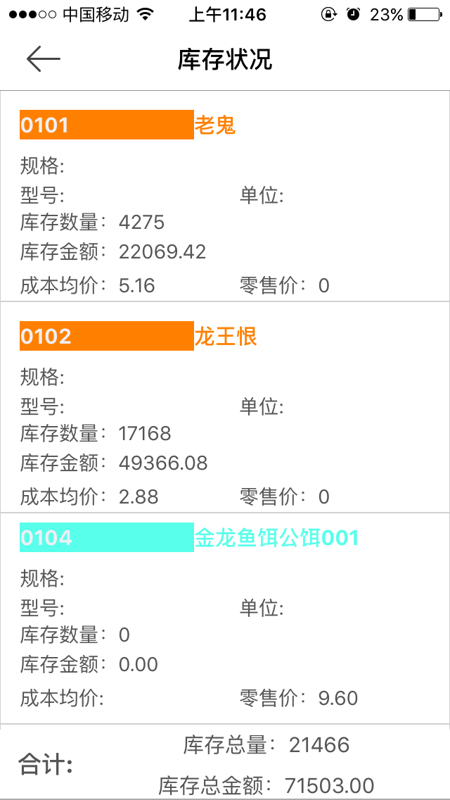
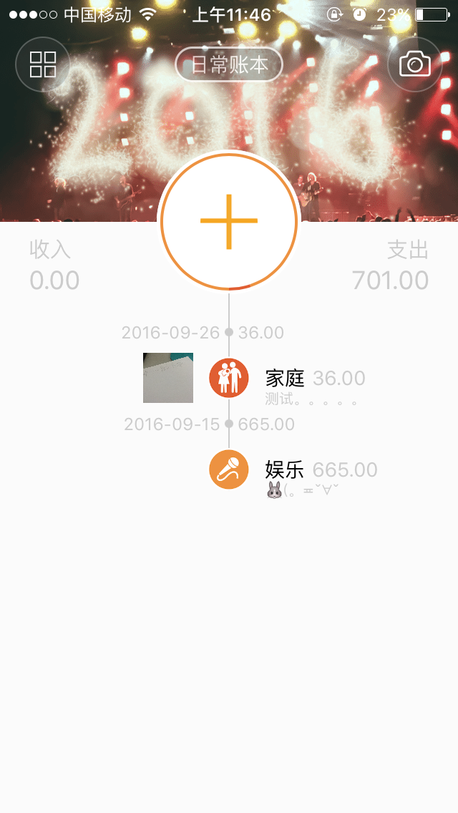
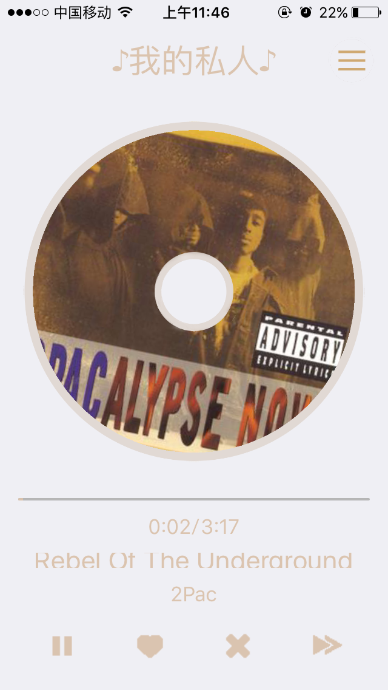
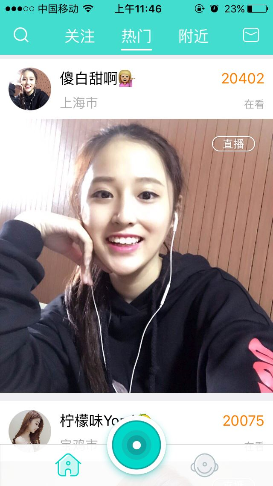
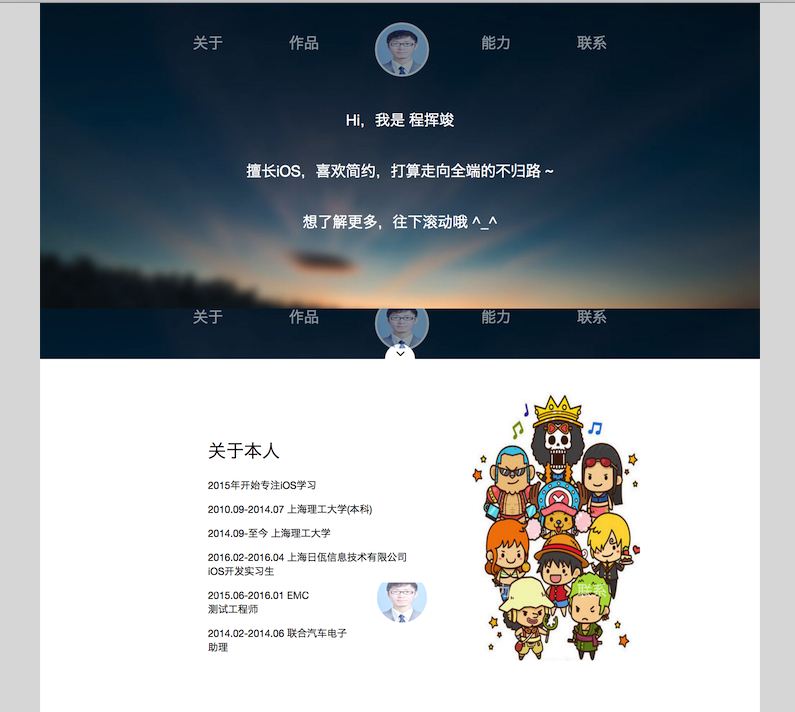

-
- Basic info. 基本信息
- 个人信息: 程挥竣 / 男 / 24岁
- 教育经历:
- 本科 / 上海理工大学 / 电子信息工程
- 硕士 / 上海理工大学 / 2017年应届生
- 英语水平: CET-6
-
- Experience. 项目与工作经验
上海日佤信息技术有限公司－iOS实习生（实习）（2016.02 - 2016.04）
-
iOS APP 日佤信息管理(已上线APPStore)
项目地址前期参与软件需求分析,进行模块概要设计,模块详细设计,代码编写等工作 ,完成与工作相关的技术文档编写,提供产品相关技术支持,对软件后期的迭 代版本升级维护。
•项目描述

这款应用为钓具零售商提供账目的查询功能，针对钓具行业量身定做。让钓具零售商从繁琐的业务管理中解脱出来，让他们的管理仅仅有条。实现了商品销售，经营历程，商品检索，库存状况，往来户检索等几个功能。
•项目职责
1.负责整个项目的整体UI框架搭建
2.负责接口调试,与服务器进行联调
3.负责数据存储框架的搭建
4.对程序进行测试、优化及上架App Store
•技术点
1.socket与服务器进行连接 XML数据解析
2.使用FMDB对相关数据进行存储；UITableView布局应用界面；
3.AutoLayout适配不同屏幕显示；
4.代理/Notification 设计模式/单例设计模式实现了各个页面之间的对应数
据传递。利用分类来封装和拓展一些方法,让程序更简洁等严格。
5.UITableView及性能优化
EMC－测试工程师（实习）（2015.06 - 2016.01）
-
使用Perl编写简单的测试脚本。学习V-Center,利用Vcenter结合SQL Server 建立私有云。安装Suse server。升级Cobra-E固件. 进行VNX2 Performance 测试,并且书写测试报告。
联合汽车电子－助理（实习）（2014.02 - 2014.06）
-
利用vlookup进行每月一次的总结,对比数量的增加与减少。打电话确认订单 流转。将同事发过来的零件销售单提交到系统。下订单,熟悉完整流程,辅 助小组完成各项工作
个人项目
-
时金记账（2016.05 - 2016.06）
这是一款实用的本地财务分析软件，专注记账理财，认真记录财富生活。

•技术点
1.UIBezierPath和CAShapeLayer绘制UI控件
2.使用YYText实现cell中显示富文本需求
3.使用大量的UIView动画和CAAnimation动画产生一些精美动画，自定义转场 动画
4.UICollectionView布局部分View
5.自己设计了数据库中的多表联结 -
我的电台FM（2016.06 - 2016.07）
这是一款音乐播放软件。基于豆瓣FM的API。

•技术点
1.使用SDWebImage框架实现图片的下载和缓存
2.使用AFN获得网络数据，并解析返回的JSON数据。
3.MPMoviePlayerController音频播放，进度条显示、实现锁屏界面音乐播放
4.使用Masonry适配不同屏幕显示 -
猫头鹰Live（2016.08 - 2016.09）
这是一款直播软件。基于映客的API。

•技术点
1.简单的集成友盟
2.使用苹果原生框架MapKit&CoreLocation，标记用户所在位置
3.继承ijkplayer播放器，实现直播中的实时拉流
4.继承LFLiveKit框架，实现直播中的实现推流 -
JohnnyCheng 个人简历（2015.8 - 至今） 简历首页
设计优雅、内容完善的CSS3简历页面

-
- Skill. 技能清单
iOS移动端
-
iOS SDK
熟练掌握Objective-C及Cocoa Touch框架，熟练使用iOS SDK及相关开发工具，了解Swift语言
掌握iOS设计、开发、调试及上线全流程（掌握Instrument性能调优工具使用，掌握Git、SVN源代码管理）
熟悉UserDefault,SQLite，CoreData等常用数据库
熟悉OC的runtime运行时机制，Runloop，内存管理机制，MVC、Delegate、Singleton、以及KVO/KVC实现机制
-
第三方类库
熟练使用CocoaPods管理使用第三方类库：FMDB、MBProgressHUD、ReactiveCocoa等
了解框架底层的一些基本原理
Web前端
-
HTML / CSS
能够完成简单的布局
-
JavaScript
熟悉原生Javascript，使用jQuery等类库编码
其他
-
做事极具条理
学习ios、C++过程，进行了详细的笔记记录，有效转化为人生财富库，并将C++笔记分享至有道云笔记，已经有5000+的收藏量。笔记地址
严重强迫症，不能忍受界面一个像素的偏差，同样不能忍受代码格式一个空格的偏差
学习能力强，以上绝大多数的技能都是自学修得的
-
- Credential. 奖项与证书
-
2015年全国研究生数学建模大赛三等奖
-
2014年校级优秀毕业生 1次
-
2011-2013年国家励志奖学金 2次
-
2011-2013年上海理工大学“优秀团员” 2次
-
- Activity. 校内实践活动
学生会活动
-
光电心协企划部部长
活动规划撰写与组织实施，配合完成日常推广宣传工作。参与活动流程梳理，张贴宣传海报，意见收集和反馈。
参与活动：怀德路小学手拉手活动 牵手随迁子女，部门活动共青森林 ，“点亮梦想·让心飞翔”，庆105周年校庆105题校史知识竞赛，学生会招新，光电寝室文化节，“踮起脚尖，亲吻阳光”跳绳大赛，心理电影播放
-
志愿者活动
参加学校组织的企业调研。负责通过电话访问，现场问卷调查等，对一些每年参加校招的企业进行调研。兼职：美乐家年会，飞利浦年会，上海市国际马拉松志愿者的工作人员